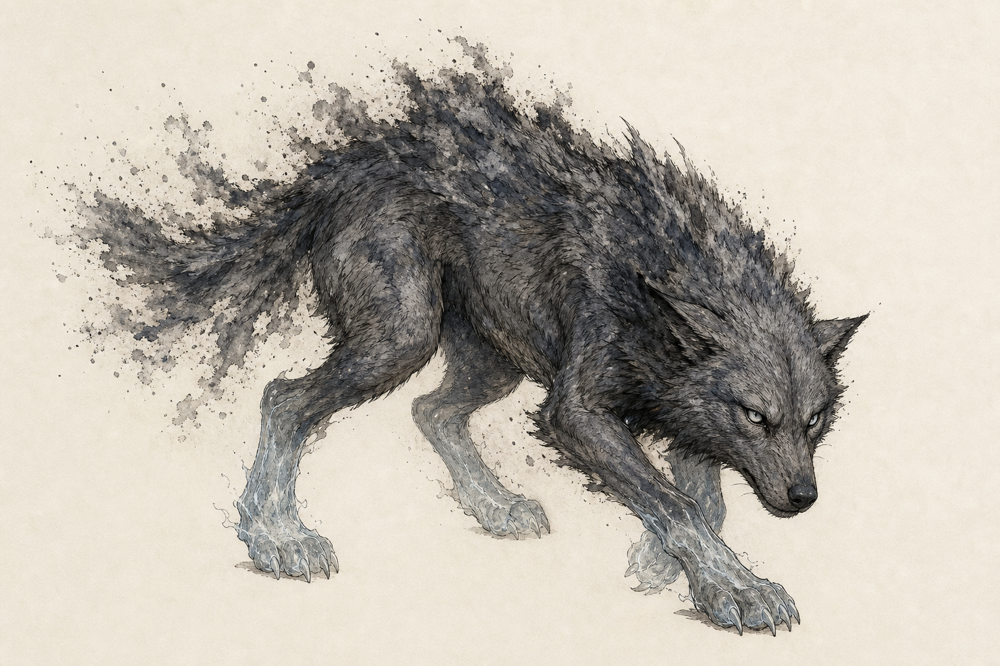

#1
Lobo de Cinza
- PV
- 16 (faixa do Grau 1: 12-24)
- Defesa
- 12 (faixa do Grau 1: 11-13)
- Ataque/CD
- +3
- Deslocamento
- 12m
- Resistência
- Percepção passiva 13
- Papel
- Predador
Aparência: Besta média com sinais de primitiva.
Atributos: FOR d8, AGI d8, VIG d6, INT d4, ESP d6, DEV d4.
Perícias: Percepção, Furtividade, Sobrevivência
Ataques: Mordida de Cinza. Ataque corpo a corpo +3, 1 alvo. Dano 1d6+2 perfurante; se houver aliado adjacente ao alvo, causa +1d6.
Habilidade especial: Tática de Matilha. 1/rodada, se um aliado estiver adjacente ao alvo, o Lobo recebe vantagem no ataque e causa +1d6 perfurante. Se o alvo falhar em ESP CD 12, fica Cercado até o início do próximo turno. 1/rodada, usa sua natureza para impor pressão tática: o alvo faz teste apropriado CD 12; falha: sofre 1d6 de dano ou perde reação até o fim do turno. 1/rodada, usa sua natureza para impor pressão tática: o alvo faz teste apropriado CD 12; falha: sofre 1d6 de dano ou perde reação até o fim do turno. 1/rodada, usa sua natureza para impor pressão tática: o alvo faz teste apropriado CD 12; falha: sofre 1d6 de dano ou perde reação até o fim do turno. 1/rodada, usa sua natureza para impor pressão tática: o alvo faz teste apropriado CD 12; falha: sofre 1d6 de dano ou perde reação até o fim do turno. 1/rodada, usa sua natureza para impor pressão tática: o alvo faz teste apropriado CD 12; falha: sofre 1d6 de dano ou perde reação até o fim do turno.
Fraqueza mecânica: Dano psíquico de calma, frio controlado ou efeito que remova Medo/Raiva causa +1 dado de dano. Se falhar em ESP CD 12, perde a habilidade especial por 1 rodada. Manobras de terreno, armadilhas ou intimidação predatória impõem desvantagem no próximo ataque.
Resistências mecânicas: Resistência a dano psíquico hostil e a efeitos de medo enquanto estiver acima de metade dos PV. Vantagem em Furtividade e Sobrevivência dentro de vegetação.
Tática: usa terreno e objetivo de cena antes de aumentar dano.
Recompensa: couro, presas, garras ou rastros úteis.